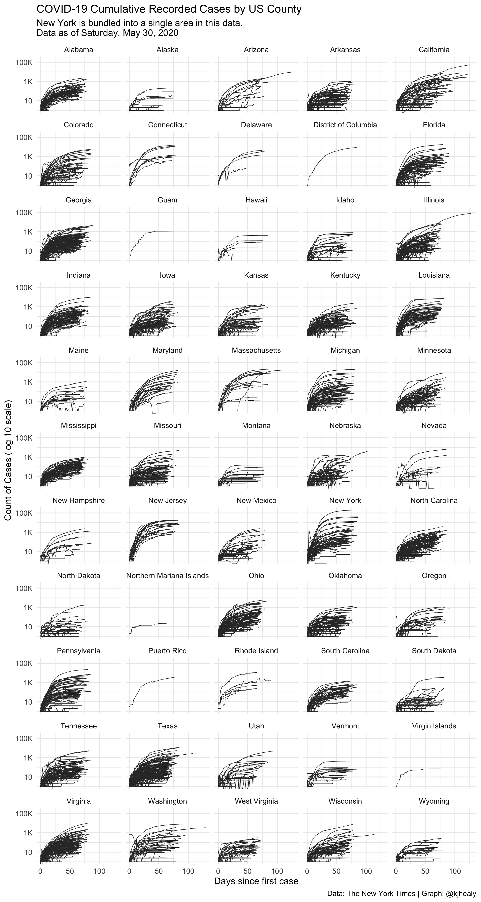

library(covdata) library(tidyverse) #> ── Attaching packages ─────────────────────────────────────── tidyverse 1.3.0 ── #> ✔ ggplot2 3.3.0 ✔ purrr 0.3.4 #> ✔ tibble 3.0.1 ✔ dplyr 0.8.5 #> ✔ tidyr 1.0.3 ✔ stringr 1.4.0 #> ✔ readr 1.3.1 ✔ forcats 0.5.0 #> ── Conflicts ────────────────────────────────────────── tidyverse_conflicts() ── #> ✖ dplyr::filter() masks stats::filter() #> ✖ dplyr::lag() masks stats::lag()
These data tables are taken from the GitHub repository maintained by New York Times staff. The information in this article mostly repeats the content of their README file.
The data begins with the first reported coronavirus case in Washington State on Jan. 21, 2020.
Data on cumulative coronavirus cases and deaths can be found in three files, one for each of these geographic levels: U.S., states and counties.
Each row of data reports cumulative counts based on our best reporting up to the moment we publish an update. We do our best to revise earlier entries in the data when we receive new information. If a county is not listed for a date, then there were zero reported confirmed cases and deaths.
State and county files contain FIPS codes, a standard geographic identifier, to make it easier for an analyst to combine this data with other data sets like a map file or population data.
In some cases, the geographies where cases are reported do not map to standard county boundaries. See the list of geographic exceptions for more detail on these.
nytcovus #> # A tibble: 109 x 3 #> date cases deaths #> <date> <dbl> <dbl> #> 1 2020-01-21 1 0 #> 2 2020-01-22 1 0 #> 3 2020-01-23 1 0 #> 4 2020-01-24 2 0 #> 5 2020-01-25 3 0 #> 6 2020-01-26 5 0 #> 7 2020-01-27 5 0 #> 8 2020-01-28 5 0 #> 9 2020-01-29 5 0 #> 10 2020-01-30 6 0 #> # … with 99 more rows
nytcovstate #> # A tibble: 3,699 x 5 #> date state fips cases deaths #> <date> <chr> <chr> <dbl> <dbl> #> 1 2020-01-21 Washington 53 1 0 #> 2 2020-01-22 Washington 53 1 0 #> 3 2020-01-23 Washington 53 1 0 #> 4 2020-01-24 Illinois 17 1 0 #> 5 2020-01-24 Washington 53 1 0 #> 6 2020-01-25 California 06 1 0 #> 7 2020-01-25 Illinois 17 1 0 #> 8 2020-01-25 Washington 53 1 0 #> 9 2020-01-26 Arizona 04 1 0 #> 10 2020-01-26 California 06 2 0 #> # … with 3,689 more rows
nytcovcounty #> # A tibble: 126,835 x 6 #> date county state fips cases deaths #> <date> <chr> <chr> <chr> <dbl> <dbl> #> 1 2020-01-21 Snohomish Washington 53061 1 0 #> 2 2020-01-22 Snohomish Washington 53061 1 0 #> 3 2020-01-23 Snohomish Washington 53061 1 0 #> 4 2020-01-24 Cook Illinois 17031 1 0 #> 5 2020-01-24 Snohomish Washington 53061 1 0 #> 6 2020-01-25 Orange California 06059 1 0 #> 7 2020-01-25 Cook Illinois 17031 1 0 #> 8 2020-01-25 Snohomish Washington 53061 1 0 #> 9 2020-01-26 Maricopa Arizona 04013 1 0 #> 10 2020-01-26 Los Angeles California 06037 1 0 #> # … with 126,825 more rows
nytcovcounty %>% mutate(uniq_name = paste(county, state)) %>% # Can't use FIPS because of how the NYT bundled cities group_by(uniq_name) %>% mutate(days_elapsed = date - min(date)) %>% ggplot(aes(x = days_elapsed, y = cases, group = uniq_name)) + geom_line(size = 0.25, color = "gray20") + scale_y_log10(labels = scales::label_number_si()) + guides(color = FALSE) + facet_wrap(~ state, ncol = 5) + labs(title = "COVID-19 Cumulative Recorded Cases by US County", subtitle = paste("New York is bundled into a single area in this data.\nData as of", format(max(nytcovcounty$date), "%A, %B %e, %Y")), x = "Days since first case", y = "Count of Cases (log 10 scale)", caption = "Data: The New York Times | Graph: @kjhealy") + theme_minimal() #> Don't know how to automatically pick scale for object of type difftime. Defaulting to continuous. #> Warning: Transformation introduced infinite values in continuous y-axis

The data is the product of dozens of journalists working across several time zones to monitor news conferences, analyze data releases and seek clarification from public officials on how they categorize cases.
It is also a response to a fragmented American public health system in which overwhelmed public servants at the state, county and territorial level have sometimes struggled to report information accurately, consistently and speedily. On several occasions, officials have corrected information hours or days after first reporting it. At times, cases have disappeared from a local government database, or officials have moved a patient first identified in one state or county to another, often with no explanation. In those instances, which have become more common as the number of cases has grown, our team has made every effort to update the data to reflect the most current, accurate information while ensuring that every known case is counted.
When the information is available, we count patients where they are being treated, not necessarily where they live.
In most instances, the process of recording cases has been straightforward. But because of the patchwork of reporting methods for this data across more than 50 state and territorial governments and hundreds of local health departments, our journalists sometimes had to make difficult interpretations about how to count and record cases.
For those reasons, our data will in some cases not exactly match with the information reported by states and counties. Those differences include these cases: When the federal government arranged flights to the United States for Americans exposed to the coronavirus in China and Japan, our team recorded those cases in the states where the patients subsequently were treated, even though local health departments generally did not. When a resident of Florida died in Los Angeles, we recorded her death as having occurred in California rather than Florida, though officials in Florida counted her case in their own records. And when officials in some states reported new cases without immediately identifying where the patients were being treated, we attempted to add information about their locations later, once it became available.
Confirmed cases are patients who test positive for the coronavirus. We consider a case confirmed when it is reported by a federal, state, territorial or local government agency.
On April 5, the Council of State and Territorial Epidemiologists Centers advised states to include both confirmed cases, based on laboratory testing, and probable cases, based on specific criteria for symptoms and exposure. The Centers for Disease Control adopted these definitions and national CDC data began including confirmed and probable cases on April 14.
Some states and counties are starting to report these “probable” Covid-19 cases and deaths. For the time being, we are attempting to continue only counting lab-confirmed cases and deaths while we explore the possibility of switching methodologies or reporting both numbers separately.
Please see the Geographic Exceptions section below for more details.
For each date, we show the cumulative number of confirmed cases and deaths as reported that day in that county or state. All cases and deaths are counted on the date they are first announced.
In some cases, the number of cases or deaths for a state or county will decline. This can occur when a state or county corrects an error in the number of cases or deaths they’ve reported in the past, or when a state moves cases from one county to another. When we are able, we will historically revise counts for all impacted dates. In other cases, this will be reflected in a single-day drop in the number of cases or deaths.
In some instances, we report data from multiple counties or other non-county geographies as a single county. For instance, we report a single value for New York City, comprising the cases for New York, Kings, Queens, Bronx and Richmond Counties. In these instances the FIPS code field will be empty. (We may assign FIPS codes to these geographies in the future.) See the list of geographic exceptions.
Cities like St. Louis and Baltimore that are administered separately from an adjacent county of the same name are counted separately.
Many state health departments choose to report cases separately when the patient’s county of residence is unknown or pending determination. In these instances, we record the county name as “Unknown.” As more information about these cases becomes available, the cumulative number of cases in “Unknown” counties may fluctuate.
Sometimes, cases are first reported in one county and then moved to another county. As a result, the cumulative number of cases may change for a given county.
All cases for the five boroughs of New York City (New York, Kings, Queens, Bronx and Richmond counties) are assigned to a single area called New York City. There is a large jump in the number of deaths on April 6th due to switching from data from New York City to data from New York state for deaths. We are not currently including the probable deaths reported by New York City.
For all New York state counties, starting on April 8th we are reporting deaths by place of fatality instead of residence of individual. There were no new deaths reported by the state on April 17th or April 18th.
Starting April 12th, our case count excludes cases labeled by the state as “Non-Georgia Resident” leading to a one day drop in cases. These cases were previously included as cases with “Unknown” county.
Alabama’s numbers for April 17th contained an error in reporting of lab test results that the state is working to correct. The number of deaths drops on April 23rd for an unknown reason.
Four counties (Cass, Clay, Jackson and Platte) overlap the municipality of Kansas City, Mo. The cases and deaths that we show for these four counties are only for the portions exclusive of Kansas City. Cases and deaths for Kansas City are reported as their own line.
Counts for Alameda County include cases and deaths from Berkeley and the Grand Princess cruise ship.
Counts for Douglas County include cases brought to the state from the Diamond Princess cruise ship.
All cases and deaths for Chicago are reported as part of Cook County.
Counts for Guam include cases reported from the USS Theodore Roosevelt.
On April 21st, the territory’s health department revised their number of cases downward, saying they had been double counting some coronavirus patients in official reports, leading to a higher number of cases reported than actually confirmed.
Additionally, from approximately April 12th through April 18th, the count of deaths for Puerto Rico include some probable Covid-19 related deaths that were not lab-confirmed. Starting April 19th these have been removed. We will revise the numbers for the 12th to 18th as possible.
Numbers reflect the combined number of lab-confirmed and probable cases and deaths as reported by the state. On April 25th, the state revised downward the number of deaths after removing “about 29 duplicates” from the number of “probable deaths” included in the total.
The total cases number includes only lab-confirmed cases, but the deaths number does include the deaths of probable Covid-19 cases.
The total cases number and total deaths number include only lab-confirmed cases and deaths. The state appears to be reporting the deaths of probable Covid-19 cases separately from the total number of deaths statewide or in each parish but we are not yet including those cases in our numbers.
The state reports lab-confirmed and probable cases and deaths separately at the state level but combine lab-confirmed and probable cases and deaths at the county level. Our statewide and county numbers combine both case types.
The total cases number includes lab-confirmed and probable cases starting around April 16th, but the deaths number does not include probable deaths, except for on April 21st and April 22nd when it does.
The state reports lab-confirmed and probable cases and deaths separately at the state level but combine lab-confirmed and probable cases and deaths at the county level. Our statewide and county numbers combine both case types.
In general, we are making this data publicly available for broad, noncommercial public use including by medical and public health researchers, policymakers, analysts and local news media.
If you use this data, you must attribute it to “The New York Times” in any publication. If you would like a more expanded description of the data, you could say “Data from The New York Times, based on reports from state and local health agencies.”
If you use it in an online presentation, please link to the New York Times’s U.S. tracking page at https://www.nytimes.com/interactive/2020/us/coronavirus-us-cases.html.
If you use this data, please send a note to covid-data@nytimes.com to that effect.
See the LICENSE for the full terms of use for this data.
This license is co-extensive with the Creative Commons Attribution-NonCommercial 4.0 International license, and licensees should refer to that license (CC BY-NC) if they have questions about the scope of the license.